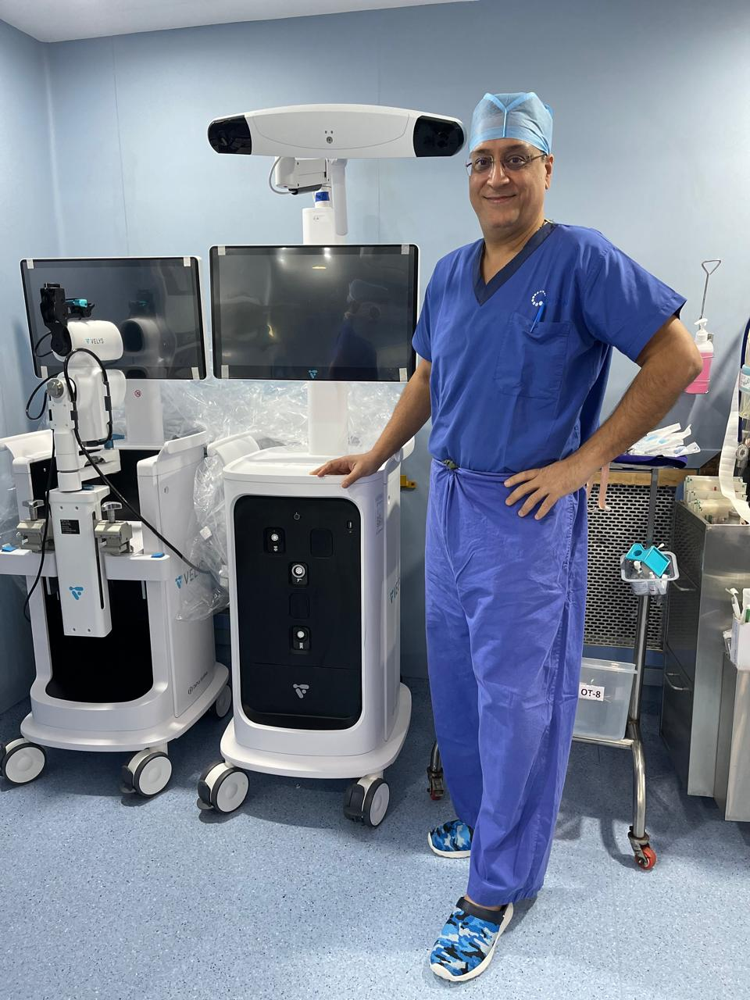

Robotic-assisted joint replacement represents the most significant advance in arthroplasty surgery in a generation. By combining real-time intra-operative anatomy mapping with robotic guidance, Dr. Joshi achieves implant positioning accuracy of within 0.5–1mm — consistently surpassing what is achievable by conventional manual techniques in even the most experienced hands.
Dr. Vinay S. Joshi uses the VELYS Robotic-Assisted Solution by DePuy Synthes (Johnson & Johnson) at Kokilaben Dhirubhai Ambani Hospital — one of the first centres in India to offer this technology. He has been performing robotic TKRs for over three years — longer than any other surgeon in Mumbai — and has performed more than 1,200 robotic TKRs, the highest volume of any surgeon in the city.
Beyond his clinical practice, Dr. Joshi actively trains fellow orthopaedic surgeons from across India and internationally — including from Malaysia, Singapore, South Korea, and Bangladesh — and routinely conducts cadaveric training programmes at the internationally acclaimed robotic centre in Bangkok.

Robotic-assisted surgery does not mean a robot performs the operation. The surgeon remains fully in control at all times. The robotic system acts as an intelligent tool — continuously measuring, tracking, and guiding — that extends the surgeon's precision far beyond what hands alone can achieve. Think of it as GPS for surgery: it does not drive the car, but ensures every movement is exactly on course.
Even in expert hands, conventional joint replacement relies on manual measurements, handheld cutting guides, and the surgeon's eye for alignment. Studies show that 20–30% of conventionally placed implants fall outside the optimal alignment zone, which is associated with higher wear, earlier loosening, and persistent post-operative pain.
The robotic system tracks bone position 500 times per second using sensors attached to the patient's bone during surgery. If the bone moves — even by fractions of a millimetre — the system instantly compensates, maintaining the pre-planned cut position with perfect accuracy throughout the entire procedure. The precision of robotic-guided cuts also results in significantly less intra-operative blood loss compared to conventional TKR — reducing surgical stress and supporting a faster, smoother recovery.
A key advantage of the VELYS system is that no pre-operative CT scan is needed — unlike older robotic platforms. The system maps the patient's bone anatomy live during surgery itself using optical tracking, creating a real-time 3D model intra-operatively. The robotic guidance then ensures every cut is made with continuous feedback and automatic error correction based on that live map.
The robotic system amplifies surgical expertise — it cannot replace it. The quality of the pre-operative plan, the surgical approach, soft-tissue management, and the post-operative rehabilitation programme all still depend entirely on the surgeon's knowledge, judgement, and experience. Dr. Joshi's extensive training ensures these elements are optimised alongside the robotic technology.
The VELYS system by DePuy Synthes (Johnson & Johnson MedTech) is purpose-built for knee arthroplasty and represents the most advanced robotics platform available in India. A key differentiator: VELYS requires no pre-operative CT scan whatsoever. It uses optical bone tracking technology to create a real-time 3D map of the patient's anatomy live during surgery — eliminating the cost, radiation, and inconvenience of a pre-operative scan while delivering the same precision.
No pre-operative CT scan required — anatomy mapped live during surgery. Real-time bone tracking at 500Hz using optical sensors. Robotic-controlled cutting guide that adjusts automatically to bone movement. Ligament tension monitoring to ensure perfect soft-tissue balance. Haptic feedback to the surgeon. A compact footprint suited to the KDAH operating theatre environment.
One of VELYS's most advanced features is real-time ligament tension assessment. The system measures the tension in the medial and lateral knee ligaments throughout the range of motion during surgery, allowing Dr. Joshi to fine-tune soft-tissue releases and ensure the knee tracks symmetrically — a key determinant of long-term patient satisfaction.
Kokilaben Dhirubhai Ambani Hospital was among the first hospitals in India to adopt VELYS, reflecting its commitment to world-class patient care. The investment in this technology, combined with Dr. Joshi's specialist robotic training, means Mumbai patients can now access robotic knee replacement at the same standard as the world's leading arthroplasty centres in the USA, UK, and Australia.
Clinical data on VELYS demonstrates: 98% of implants placed within 3° of target alignment (vs 72% conventional); 4× reduction in outlier component positioning; significantly lower intra-operative blood loss; mean hospital stay of 3.8 days vs 5.1 days for conventional TKR at comparable centres.
Dr. Joshi meets with the patient, reviews standard X-rays, examines the knee, and discusses the personalised surgical approach. No CT scan is required — one of the key advantages of the VELYS system over older robotic platforms. This saves cost, time, and radiation exposure before surgery.
Dr. Joshi selects the appropriate implant size and confirms alignment targets based on X-rays and clinical assessment. The intra-operative robotic system will then use this framework alongside live bone mapping during surgery to guide every cut with precision — no pre-operative scan required.
At the start of surgery, optical tracking arrays are temporarily attached to the femur and tibia. The VELYS system maps the patient's actual bone anatomy in real time — building a live 3D model during the operation itself. This map continuously updates throughout the procedure, tracking every movement of the bone with no reliance on pre-operative imaging.
Dr. Joshi makes all bone cuts using the robotic-assisted cutting guide, which automatically repositions itself in real time to maintain the planned angle, depth, and orientation regardless of any bone movement. The system locks out cuts that would deviate from the plan, providing an active safety boundary.
Trial implants are inserted and the knee is taken through its full range of motion. The VELYS system quantitatively measures ligament tension throughout this arc. Dr. Joshi uses this data to make precise soft-tissue adjustments, ensuring the knee feels naturally balanced and tracks correctly before final implant fixation.
The final implants are cemented or press-fit into position. The wound is closed in layers and a compression bandage applied. Physiotherapy begins the next morning. The robotic approach causes less soft-tissue trauma, resulting in less pain, faster rehabilitation, and a shorter hospital stay compared to conventional TKR.
The superior outcomes of robotic-assisted knee replacement are now documented in multiple high-quality clinical studies and national joint registries. The benefits are most significant in the short-to-medium term (faster recovery, less pain) and long-term (better alignment, longer implant life).
Optimal mechanical alignment (within 3° of neutral) is achieved in 95–98% of robotic cases vs 70–72% of conventional cases. Even small alignment errors compound over millions of steps, accelerating wear and loosening. Correct alignment from day one dramatically extends implant life.
The controlled, precise bone cuts of robotic surgery cause less thermal damage and micro-fracturing to surrounding bone, reducing early post-operative pain. Patients typically require less pain medication, mobilise faster, and have a 20–30% shorter hospital stay compared to conventional TKR patients.
The most common complaint after conventional TKR is that the knee feels "artificial." Robotic precision, combined with VELYS's ligament balancing technology, produces a more symmetric, naturally balanced knee that patients report feels closer to their original joint — resulting in higher satisfaction scores.
Poor alignment is the leading cause of early implant failure. By achieving consistently optimal positioning, robotic surgery is projected to significantly extend implant survivorship beyond the 15–20 year benchmark of conventional TKR — an especially important consideration for younger patients who may otherwise require a revision surgery in their lifetime.
Robotic-assisted TKR is suitable for the vast majority of patients who are candidates for knee replacement. The technology is particularly valuable for specific patient groups, though Dr. Joshi will discuss the most appropriate approach for your individual situation during consultation.
Younger patients (under 65) who will place greater long-term demands on their implant; patients with significant deformity where conventional alignment guides are less reliable; patients who want the highest possible chance of a natural-feeling knee; patients for whom a revision surgery would be particularly difficult or risky.
Robotic TKR with VELYS requires only standard X-rays — no CT scan is needed. Dr. Joshi will review your imaging, examine your knee, and discuss your lifestyle expectations to create a personalised surgical plan. The VELYS system maps your anatomy live during surgery, making the process simpler and more streamlined than older robotic platforms.
Robotic-assisted TKR costs marginally more than conventional surgery due to the technology and planning involved. However, the potential saving of avoiding a revision procedure — which is significantly more expensive, risky, and involves a longer recovery — makes it a highly cost-effective investment over the patient's lifetime. Insurance coverage should be confirmed with your provider.
At your consultation, Dr. Joshi will review your X-rays, examine your knee, and discuss whether robotic-assisted surgery is the right choice for you. He will explain the specific implant he recommends, the expected recovery timeline, and answer all questions. Virtual consultations are available for patients outside Mumbai.
The evidence base for robotic-assisted joint replacement is now robust, drawing from multiple randomised controlled trials, large prospective cohort studies, and national joint registry data across the USA, UK, Australia, and Europe.
Randomised controlled trial of 112 patients demonstrated robotic TKR achieved significantly better coronal alignment accuracy (96% vs 71% within 3°), with superior patient-reported outcome measures at 1 and 2 years compared to conventional TKR.
Systematic review of 14 studies including 1,247 robotic TKR patients found statistically significant improvements in implant alignment accuracy, patient satisfaction, and short-term functional recovery compared to conventional manual TKR, with no increase in complication rate.
National registry data on 23,000+ robotic-assisted procedures demonstrates a statistically significant 18% reduction in 5-year revision rates for robotic TKR compared to conventional TKR — translating to thousands of patients spared the risk, cost, and recovery burden of revision surgery.
Dr. Joshi is one of India's most experienced robotic joint replacement surgeons. Consultations are available in-person at KDAH Andheri West, and virtually for patients outside Mumbai.
+91 22 4269 6969 Back to Main Site →